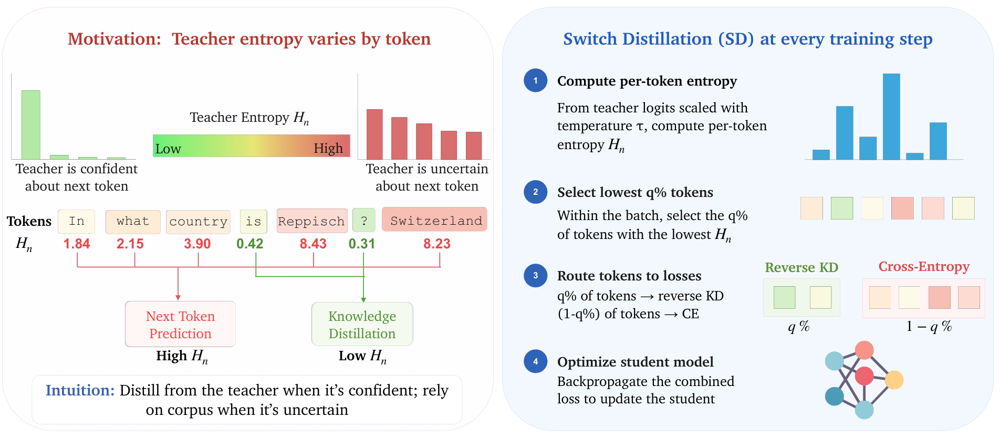
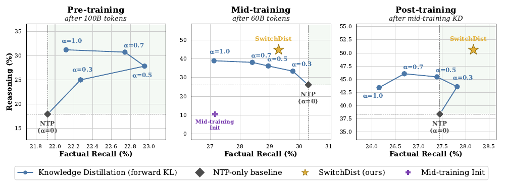

Switch Distillation: Entropy-Routed KD Fixes Mid-Training's Reasoning–Recall Tradeoff
TL;DR
- "Knowledge Distillation During Mid-Training Favors Reasoning over Factual Recall" (arXiv 2609.01532; Jacqueline He, Howard Yen, Shuyue Stella Li, Margaret Li, Hanqing Zeng, Yinglong Xia, Benyu Zhang, Zhuokai Zhao, Qiang Zhang, Pang Wei Koh, Luke Zettlemoyer, Wen-tau Yih — Meta AI / UW / Princeton; code released) shows that logit-based KD is stage-dependent: in controlled OLMo-2 experiments it Pareto-improves reasoning and factual recall during pre-training, but during mid-training no KD operating point — any α, forward or reverse KL, 1B/7B/13B teachers — beats plain next-token prediction on factual recall.
- The mechanism is an entropy asymmetry: teachers are confident (low predictive entropy) on procedural data and diffuse on knowledge-heavy tokens; students learn low-entropy facts early, so by mid-training the unlearned facts sit exactly where the teacher's supervision is weakest — and KD attenuates the gold-token gradient to ~0.5× NTP on those tokens.
- Switch Distillation routes each token by teacher entropy: the lowest-entropy q% (q=20) get reverse-KL distillation, the rest get plain cross-entropy. With a 7B teacher, mid-training reasoning goes 26.1% → 44.7% over NTP with factual recall 29.3% vs 30.3%; after the full post-training pipeline the recall gap closes entirely while reasoning stays 1.25–1.32× NTP.
Why this matters
Mid-training is where the token budget is scarcest and per-token learning signal matters most — and it is quietly becoming where frontier labs put their distillation (the paper cites its use in Gemma-class and Meta pipelines). This work is the first controlled evidence that the standard KD objective is the wrong default at that stage: it looks great on reasoning dashboards while silently slowing exactly the knowledge acquisition mid-training corpora are curated for. Anyone running "distill from the instruct teacher during the annealing phase" should check Figure 1's middle panel before shipping.
For this tracker, it's also the cleanest mechanistic story we've filed under distillation this year. The on-policy distillation literature (OPD survey, MOPD's no-free-lunch results, DAPD) keeps finding that teacher supervision helps unevenly and needs targeting; this paper derives the where from first principles — teacher predictive entropy as a per-token reliability signal, validated against gold-token agreement, learning curves, and gradient norms — and then builds the minimal intervention on top. The signal is free (you already computed teacher logits), the method is four lines, and the ablations show routing policy, not objective choice, carries the gains.
The core idea
Standard logit KD interpolates cross-entropy with a divergence to the teacher:
where \(\alpha\in[0,1]\) is distillation strength and \(\mathcal{L}_{\mathrm{KL}}\) is forward or reverse KL between temperature-scaled teacher and student next-token distributions. Sweeping \(\alpha\), KL direction, and teacher size (OLMo-2 1B/7B/13B Instruct) over a 1B student:
- Pre-training (100B tokens from scratch): moderate forward-KL distillation improves reasoning and factual recall over NTP.
- Mid-training (60B tokens from the 4T-token Stage-1 checkpoint, Dolmino mix): every KD point gains reasoning but loses factual recall relative to NTP — the reasoning–recall tradeoff. It persists (narrowing) through post-training.
Three measurements explain the stage dependence. (1) Teacher entropy is systematically lower on procedural domains (math, FLAN) than knowledge-heavy ones (web, Wikipedia), and within every domain, lower entropy predicts higher teacher top-1 agreement with the corpus token — entropy is a supervision-quality signal. (2) Under pure NTP, students acquire facts in teacher-entropy order: by end of pre-training the student knows 67% of lowest-entropy-quintile facts vs 5% of the highest; by the 4T-token mid-training init it's 80% vs 7% — so mid-training's remaining facts live in the high-entropy tail. (3) On those high-entropy tokens the teacher puts little mass on the gold token, and both FKD and RKD attenuate the gold-token gradient to roughly 0.5× NTP. Weak supervision, concentrated precisely on the unlearned facts.
The fix follows directly: use the teacher only where it is confident. Compute per-token teacher entropy
where \(p_T^{(\tau)}\) is the teacher's temperature-\(\tau\) next-token distribution over vocabulary \(\mathcal{V}\) at position \(n\), and hard-route the lowest-q% of in-batch tokens (\(\mathcal{S}_q\)) to reverse KL, the rest to cross-entropy:
with the two terms normalized separately so q sets only the routing policy, not the effective distillation strength. Reverse KL is chosen deliberately: its mode-seeking behavior exploits the sharp teacher distributions the router selects. No extra parameters, no extra forward passes.

Figure 6 from the paper: teacher entropy varies token-by-token ("Reppisch" is uncertain; "Switzerland" is not); each step routes the lowest-entropy q% of tokens to reverse-KL distillation and the rest to corpus cross-entropy.How it works
Algorithm: Switch Distillation (one mid-training step)
# reconstruction from Fig. 6 and Sec. 5; no numbered algorithm in paper
Input: batch of corpus sequences, student S, frozen teacher T,
temperature tau, routing quantile q (paper: q = 20%)
1 forward T on the batch -> teacher logits (needed for KD anyway)
2 for each supervised token position n:
3 H_n <- entropy of temperature-scaled teacher distribution
4 S_q <- the q% of in-batch tokens with the LOWEST H_n
5 loss_KD <- mean over n in S_q of tau^2 * RKL(p_S,n || p_T,n)
6 loss_CE <- mean over n not in S_q of -log p_S(x_n | x_<n)
7 loss <- loss_KD + loss_CE # normalized separately:
8 # q changes routing, not strength
9 backprop loss; update student
# intuition: distill where the teacher is confident,
# trust the corpus where it is not
Setup details that matter for reading the numbers: mid-training runs 60B tokens of Dolmino Mix 1124 (DCLM web, FLAN, Dolmino Math, peS2o, Wikipedia, Stack Exchange) from the OLMo-2 1B 4T-token checkpoint; evaluation uses the OLMES harness grouped into Reasoning (generative), Factual Recall (TriviaQA/NQ/SimpleQA-style generative retrieval), and Knowledge & Commonsense (multiple choice). Baselines: NTP, FKD and RKD at α=0.5 (their best balance), and TRKD — the token-routing KD from the pre-training literature, which distills high-entropy tokens while keeping CE everywhere; Switch Distillation inverts both choices (low-entropy tokens, hard switch).
Results
- Mid-training, 7B Instruct teacher: Reasoning macro 26.1% (NTP) → 44.7% (SwitchDist), vs 39.3% for the best conventional KD (RKD) and 37.5% for TRKD. Factual Recall 29.3% vs NTP's 30.3% — the closest of any KD method (abstract framing: 1.61–1.71× reasoning, 96.7–96.8% recall preserved). Knowledge & Commonsense is also best at 49.3% (1.13–1.19×). GSM8K goes 40.4 → 69.7.
- 13B teacher: same pattern at slightly lower absolute levels (Reasoning 42.1%, GSM8K 66.0) — the 7B teacher beats the 13B, consistent with capacity-gap findings in the distillation-scaling literature.
- Post-training persistence: applying OLMo-2's full pipeline (SFT → DPO → RLVR×2) to every mid-trained checkpoint, SwitchDist stays strongest on reasoning (50.6% macro with the 7B teacher, 1.25–1.32× NTP) and — despite entering with a small recall deficit — forgets the least, finishing with the highest Factual Recall macro-average. The mid-training choice survives alignment.
- Speed: SwitchDist passes the final reasoning performance of the 60B-token NTP baseline within the first 2.5B mid-training tokens evaluated (Fig. 13) — a ~24× token-efficiency statement for reasoning acquisition.
- Ablations (7B teacher): swap RKL→FKL: −2.9 reasoning; replace entropy routing with teacher-correctness routing (−4.4 reasoning, −5.1 recall), oracle domain routing (−7.2 reasoning), or random routing (−6.5); replace soft distillation with teacher top-1 labels: −6.4 reasoning. Entropy-based routing is the driver; the soft distribution adds the rest.

Figure 1 from the paper: sweeping distillation strength α with a 7B-Instruct teacher. KD Pareto-improves in pre-training (left) but trades recall for reasoning in mid-training (middle); Switch Distillation (★) mitigates the tradeoff and Pareto-dominates NTP after post-training (right).How it connects
- Entropy-gated teacher trust is converging from two directions. The paper's closest relative, EOPD, uses teacher entropy during post-training on student-generated trajectories to interpolate KL directions; SwitchDist uses it during mid-training on fixed corpus tokens to decide teacher-vs-corpus. Together with the confidence-weighted variants in the OPD survey and the dual-anchor correction of DAPD, "never apply uniform teacher supervision" now looks like the consensus across every training stage.
- A stage-aware companion to the stage-allocation results. The pretrain-vs-RL scaling-law study asks where compute goes across stages; this paper shows the objective itself must change per stage because the student's knowledge state changes what teacher supervision is worth. Same lesson MidTool drew for tool-use data placement: mid-training is not just "more pre-training."
- Inverts TRKD rather than extending it. TRKD (from the pre-training/in-context-learning line) distills high-entropy tokens with CE retained everywhere; SwitchDist distills low-entropy tokens with a hard switch — and beats it by 7.2 reasoning points here. The disagreement is a useful flag that routing polarity is regime-dependent, not universal.
- Feeds the tracker's teacher-reliability thread. The gold-token gradient-attenuation analysis (~0.5× NTP at high entropy) gives a mechanistic basis for failure modes catalogued in MOPD / no-free-lunch and the generalization asymmetries in OPD's dual nature — weak teacher mass on the right answer doesn't just fail to help, it displaces the corpus signal that would have.
Critical take
The scope qualifiers matter. Everything is OLMo-2 (plus a SmolLM2 replication in the appendix) at 1B-student scale with same-family teachers — vocabulary-compatible, same tokenizer, same data lineage. Cross-family distillation, larger students, and stronger-but-mismatched teachers are untested, and the observed 7B>13B teacher ordering hints the routing threshold q interacts with the capacity gap (q=20% was tuned; the sweep is in the appendix, sensitivity unreported in the main text). The entropy signal is also computed from the same teacher whose supervision it gates — a teacher that is confidently wrong (miscalibrated on its own pre-training gaps, or on shifted domains like code) gets routed in, and the teacher-correctness ablation suggests correctness and confidence do come apart (−4.4/−5.1 when routing on correctness — though that oracle uses gold labels, so the comparison isn't pure).
There's also a framing subtlety: "preserves 96.7% of factual recall" is still a small absolute regression vs NTP at the mid-training checkpoint; the full Pareto dominance only materializes after post-training. That's the right endpoint to care about — mid-training exists to prime post-training — but it means the headline claim rests on one post-training pipeline (OLMo-2's) applied once per checkpoint. Still: a robust negative result about the default objective, a three-factor mechanism with direct measurements at every link, and a near-free fix that survives alignment. This is what a good mid-training paper looks like.
If you remember three things
- KD is not stage-agnostic: with a knowledgeable student, uniform distillation slows factual acquisition — no (α, KL-direction, teacher-size) point beats NTP on recall during mid-training, even as reasoning soars.
- Teacher entropy is a free per-token reliability signal: it predicts gold-token agreement within every domain, and the unlearned facts at mid-training concentrate exactly where it is highest.
- Route, don't blend: reverse-KL on the lowest-entropy 20% of tokens + plain CE elsewhere → 1.6–1.7× reasoning at 97% recall, Pareto-dominating NTP after post-training — and routing policy, not loss choice, is what carries it.